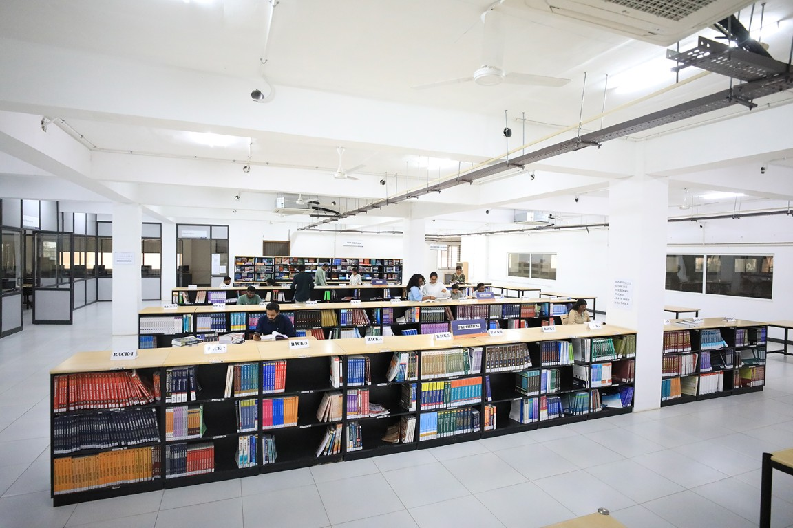
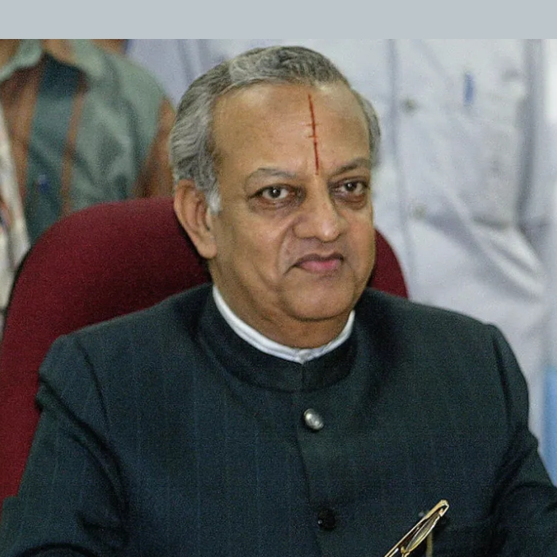
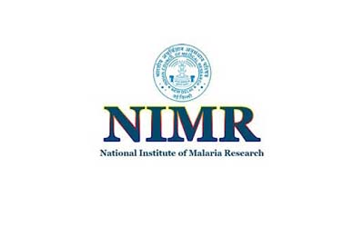
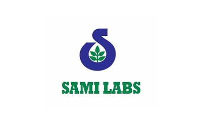
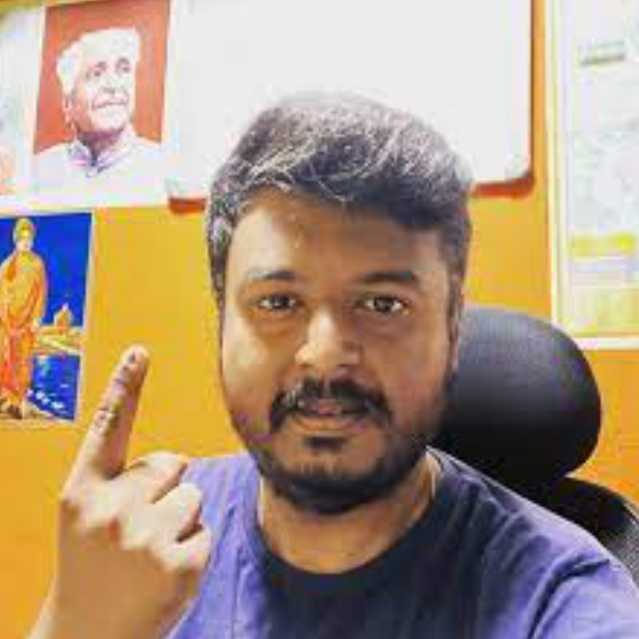

Eligibility
45% aggregate score in Bachelor's Degree from a recognized University (40% in case of SC / ST and 42% in case of OBC). For additional info, refer https://admissions.pes.edu/
Get In Touch
Have questions about LL.B (Hons.) admissions?
Share a few details and our admissions counsellors will walk you through eligibility, fees, scholarships and the application timeline — no obligation.
- Fast Response — a counsellor calls back within 24 hours.
- One-on-One Guidance — personalised help with eligibility and documentation.
- No Obligation — ask questions before you decide to apply.
Fill this in and we'll reach out shortly.
Overview
LL.B (Hons.)
Faculty of Law, PES University was established in 2017, under the guidance of our Hon’ble Founder and Chancellor, Dr. M.R Doreswamy, with a vision of establishing a global law school. The institution is also guided and mentored by several legal luminaries like Justice M.N Venkatachaliah, former Chief Justice, Supreme Court of India.
The 3-year LL.B (Hons.) program at PES University is a professional degree open to graduates from all disciplines. It serves as a qualifying degree for admission to legal practice, fully complying with the requirements of the Bar Council of India. Beyond this foundation, the program offers a rigorous legal education rooted in PES University’s distinctive curricular and pedagogical approach. This full-time program emphasizes the interdisciplinary study of law and experiential learning, bridging theoretical knowledge with practical application. It is designed to equip students with the skills and expertise needed to address the challenges of the 21st century and excel in the legal profession.



Why PES University
Program Differentiators (PESU X Factors)
- Case Studies and Case Analysis (Analytical)
- Class Assignments & Debates (Problem-solving)
- Research Papers & Viva (Research / Skill Enhancement)
- Class Presentations – Complementing to syllabus (Articulation Skills)
About the Programme
Programme Highlights
Unique Selling Points
Assessment
The assessment system of the course is designed to cultivate legal acumen and critical thinking in students. It comprises two components: internal assessments and end-semester assessments, each carrying equal weightage. PES University employs a continuous assessment approach to foster consistent learning and engagement throughout the program.
Teaching and Learning Process
- a. Research-Driven Learning – Essential Skill Development: Research is fundamental to the lawyer’s craft. At PES University, students have access to premier national and international law databases, including Manupatra, SCC Online, Hein Online, LexisNexis, EBC Reader, EBSCO and JSTOR. This access supports comprehensive research training, with elective courses across four specialized groups, enabling students to tailor their expertise.
- b. Experiential Learning: Integrated Internship Program: Our experiential learning ecosystem takes legal education beyond the classroom through moot courts, trial advocacy, client counselling, read-a-thons, hackathons, certificate programmes, legal services, field visits, and workshops. Through presentations, research papers, and interactions with legal luminaries and practitioners, students gain first-hand exposure to diverse perspectives and the realities of legal practice. These experiences enable students to translate legal theory into practice while strengthening legal reasoning, research, drafting, communication, advocacy, problem-solving, collaboration, and professional judgment, preparing them to become confident, practice- ready, and socially conscious legal professionals.
- c. Zero Hour – Insights from Leading Minds: Every week, students engage with accomplished professionals from diverse fields, including civil servants, judges, advocates, policymakers, industry leaders, and subject-matter experts, through insightful sessions on contemporary legal and interdisciplinary issues. The programme brings together distinguished voices from law, public policy, management, the arts, and other professional domains, exposing students to varied perspectives and real-world experiences. These interactions enrich classroom learning while providing students with opportunities to build meaningful professional connections, seek mentorship, and gain valuable insights into diverse career pathways.
Program Design and Delivery Method
As part of the 3-year LLB programme, students will be offered a range of core courses (mandatory for all students), and specialization Courses. Core courses provide an introduction to an area of study. These include foundational law subjects as well as interdisciplinary courses (See table below).
Curriculum Design: Specialization with Dynamic pedagogy
Our academic programmes integrate specialized honours courses with a wide range of experiential and professional learning initiatives, including legal services activities, industrial visits, seminars, expert talk and interactions with distinguished members of the legal luminaries. Each course is designed to develop essential competencies in legal research, advocacy, communication, critical thinking, and problem- solving. Through research paper writing, class presentations, moot court exercises, case simulations, and other practice-oriented activities, students are encouraged to apply legal knowledge to real-world situations and develop the skills, professional confidence, and practical understanding necessary for a successful career in law.
PESU Exposure
- a. PESU Legal Eagle – : In their second year, students engage in the Contemporary Law Forum, meeting weekly in small groups to explore, debate, and critically examine emerging laws and landmark judicial decisions. Each session fosters an intellectually vibrant exchange of diverse perspectives, arguments, and interpretations of contemporary legal developments. Through this programme, students build confidence in articulating ideas, challenging perspectives, and connecting evolving legal principles with real-world developments.
- b. Course Structure & Credit Requirements: As part of the 3-year LL.B programme, students will be offered a range of core courses (mandatory for all students), and Specialization Courses. Core courses provide an introduction to an area of study. These include foundational law subjects as well as interdisciplinary courses.
- c. Legal ServicesLegal Services Clinics are established with a twin objective of inculcating an attitude amongst the students to provide effective legal and para legal services to the poor and marginalized sections of the society who have difficulty accessing the judicial system. Additionally, it also provides a centre to improve the clinical legal skills of the students. Demonstrating our commitment to society, we have adopted five villages to provide legal services to the under privileged.
Scholarships
PES University offers merit-based scholarships to recognize and reward academic excellence among its students. The Prof. MRD Scholarship, which provides the top 5% of students based on CGPA with a merit certificate and a 50% tuition fee refund, and the Prof. CNR Rao Scholarship, which awards the next 20% of students (based on SGPA) with a merit certificate and a 40% tuition fee refund. These scholarships reflect PES University's commitment to supporting meritorious students and fostering academic achievement.
Course Structure & Credit Requirements
As part of the 3-year LL.B programme, students will be offered a range of core courses (mandatory for all students), and electives. Core courses provide an introduction to an area of study. These include foundational law subjects as well as interdisciplinary courses (See table below).
Core Courses
- All courses are generally for four credits. Each student is required to successfully complete a total of 144 credits, comprising a combination of core courses and elective courses, to fulfil the requirements of the program. These courses include classroom instruction and incorporate a continuous assessment component comprising of assessment, research papers, presentations, class participation, moot court exercises, response papers and related academic activities.
- Every student has to complete a minimum of 48 credits in an academic year (between core and specilization) and a total of 144 credits over the three years.
Workshop and Certificate Courses
- To allow students to explore their areas of interest in a systematic and comprehensive manner, PESU offers a range of WORKSHOP AND CERTIFICATE COURSES. In addition to PESU’s own faculty, WORKSHOP AND CERTIFICATE COURSES are often taught by practitioners and other experts
About the Programme
Why Study Law at PES University?
The Faculty of Law, is working with an intent to create an enlightened and industrious fraternity of law students seeking to make an impact in the field of law and contribute constructively to society. This endeavour was undertaken with an intent to blend academic rigour and excellence with application and practical exposure in order to create a holistic experience for learning and to produce a professionally superior and ethically strong workforce.
Choose Your Path
Specializations/ Domains / Majors / Minors
Curriculum
Curriculum Structure
Course Structure
- Legal Methods
- Law of Torts
- Contracts – I
- Jurisprudence
- Constitutional Law – I
- Interpretation of Statutes
- Contracts – II
- Family Law – I
- Constitutional Law – II
- Criminal Law – I (BNS)
- Property Law
- Civil Procedure Code
- Law of Evidence
- Drafting, Pleading, and Conveyancing
- Family Law – II
- Criminal Law-2 (BNSS)
- Administrative Law
- Information Technology and Cyber Laws
- Intellectual Property Law
- Company Law
- Environmental Law
- Professional ethics (Clinical Course II)
- Banking Law
- Labour Law-1
- Labour Law-2
- Alternative Dispute Resolution (Clinical Course III)
- Electives
- Electives
- Electives
- Electives
- Moot Court and Internship (Clinical Course IV)
*Subject to change
Elective Courses
- International Trade Law
- Commercial Arbitration
- Investment Law
- Financial Market Regulation
- Insurance Law
- Insolvency & Bankruptcy Laws
- Merger & Acquisition
- Corporate Governance
- Law of Industrial Design
- Law of Copyright & Related rights
- Law of Patent & Practice
- Law of Trademark
- IP & Entertainment Laws
- Geographical Indications, Plant Varieties & Farmers’ Rights
- Other Forms of IPR
- Law of Biodiversity and Traditional Knowledge
- Media & Law
- Indian Federalism
- Affirmative Action and Discriminative Justice
- Comparative Constitutional Law
- International Human Rights
- Local Self Government Law
- Health Law
- Legislative Drafting
- Criminal Psychology
- Penology & Victimology
- Forensic Science and Law
- Comparative Criminal Procedure
- White Collar Crime
- Witness Examination
- Human Rights and Criminal Justice
- Law and Organized Crime
*Subject to change
Careers
Career Prospects
About the Programme
Internships
- The internship program is designed to immerse students in the practical aspects of legal practice, bridging the gap between theoretical knowledge and real-world application. Students can undertake internships in various settings, including law chambers, courts, administrative offices, quasi-judicial bodies, prosecution departments, police and correctional institutions, corporate establishments, government law offices, legal aid centres, legislative secretariats, think tanks, research institutions, and non-governmental organizations.
- The program focuses on developing essential professional skills, understanding professional ethics, addressing social responsibility, and managing challenging situations in both practical and professional contexts. Internships provide students with opportunities to explore diverse areas of law and various legal practice environments, helping them make informed decisions about their future career paths. Additionally, internships often lead to valuable professional connections and potential job opportunities.
About the Programme
Running Internships
- The Running Internship Programme is a structured professional internship initiative that enables students to undertake internships alongside their regular academic commitments and outside scheduled class hours. It facilitates the application of classroom knowledge to real-world legal and professional settings, strengthens legal research, drafting, communication, and professional skills, and promotes an understanding of professional ethics and workplace responsibilities.
- The students of 3 year LL.B Programme has to undergo running internship after the class hours. Internship assistance will be provided by the Internship and Placement Centre Faculty of Law with the request of the student
The students have to undergo minimum of 12 weeks of internship during the internship breaks stipulated by PESU.
The following firms and organizations represent potential placement and internship opportunities for our law students






Financial Support
Merit scholarships, awarded on performance
Over ₹140 crores in merit scholarships have been given to PES University students since 2014.
Merit Scholarships
Awarded on CGPA / SGPAProf. MRD Scholarships
Merit Certificate + 50% Tuition Fee Refund for Top 5% of the Students based on their CGPA.
Prof. CNR Rao Scholarships
Merit Certificate + 40% Tuition Fee Refund for the next 20% of the Students based on their SGPA.
Distinction Awards
Merit Certificate for Students securing 7.75+ SGPA.
PES Loyalty Program
Awarded on family / institutional ties, every year of studyPES Employees
Children of full-time staff, 5+ years employment.
PES Institution Students
Graduates of any PES institution or sister concern.
Siblings of Students
Siblings of currently enrolled PES students.
Alumni Family
Siblings and children of PES University alumni.
University Highlights
Recognition beyond the programme
The accreditations and rankings behind PES University as a whole.
University in Karnataka
Among new universities under 5 years, ranked by KSURF.
NAAC Accredited
PES University holds NAAC's top-grade accreditation nationally.
B-School in Karnataka
Times of India B-School Rankings, 2021.
Most Preferred B-School
Second only to IIM Bangalore among B-School aspirants, per Times of India.